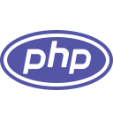

HTML (HyperText Markup Language по англ.) - язык разметки документов для просмотра веб-страниц в браузере. Браузеры получают эту разметку при помощи HTTP/HTTPS или получают с локального диска, далее импортируют этот код в интерфейс, отображаемый на мониторе пользователя. Документы, содержащие в себе разметку, имеют расширение .html либо .htm. Весь код состоит из специльаных элементов, именуемых тегами. Для постройки веб-сайтов используется далеко не все теги, в основном это <div>, <img>, <header>, <p>, <br>, <script>, <link>. Также существует другая версия HTML - XHTML, использующий язык XML и его синтаксис, более строгий вариант HTML.
CSS (Cascading Style Sheets по англ.) - язык декорирования и описания внешнего вида HTML документа. Кроме HTML, он также может использоваться для стилизации XML файлов. CSS используется для задания шрифтов, цветов, стилей, расположения отдельных блоков на веб-странице. Код языка может вписываться как в сам HTML-код, при помощи тега <style>, так и в отдельный файл с расширением .css. Если CSS-код находится в отдельном файле, то для его подключения в HTML нужно прописать в теге <head> тег <link> с путем до файла. Для упрощения разработки и более быстрого написания кода, существуют фреймворки. Из них самые популярные для CSS это - Boostrap, Tailwind, Foundation. (Подробнее о фреймворках → Frameworks)

JavaScript (аббр. JS) - мультипарадигменный язык программирования. Имеет ООП, императивное и функциональное программирование. При его создании стояла создать язык похожий на Java. На данный момент JS'ом не владеет какая-то конкретная организация или компания, что отличает его от других языков, использующихся в веб-разработке. JavaScript обычно используют как встраиваемый язык для программного доступа к обьектам приложений. Более широкое его применение находится в придания сайтам интерактивности. Синтаксис языка очень похож на C и Java, а семантически ближе к Self, Smalltalk и может быть Лиспу. Помимо веб-разработки, на JS можно писать виджеты, мобильные приложения (на устройствах с Palm WebOS), прикладное ПО (к примеру около 16% исходника Firefox написано на JavaScript). Среди фреймворков для данного языка больше всего выделяются React, Vue, Angular, jQuery. Так же частенько используется другая версия JavaScript - TypeScript.

PHP (Hypertext Preprocessor по англ.) - скриптовый язык программирования общего назначения, активно применяющийся в веб-разработке. На данный момент является одним из основных языков для построения динамических сайтов. Самая новейшая на сегодняшний день версия этого языка это PHP8. Для работы с PHP используется его интерпретатор Zend Engine. На этом ЯП, в отличии от других языков, пишут серверную часть сайта. На PHP также написаны система управления сайтами (CMS), различные фреймворки такие как Laravel, Symfony, Drupal. Кроме серверной части, на PHP можно писать интерфейс для создания серверов, отладки скриптов. Синтаксис языка, как и у JS похож на C, однако цикл foreach заимствован из Perl.